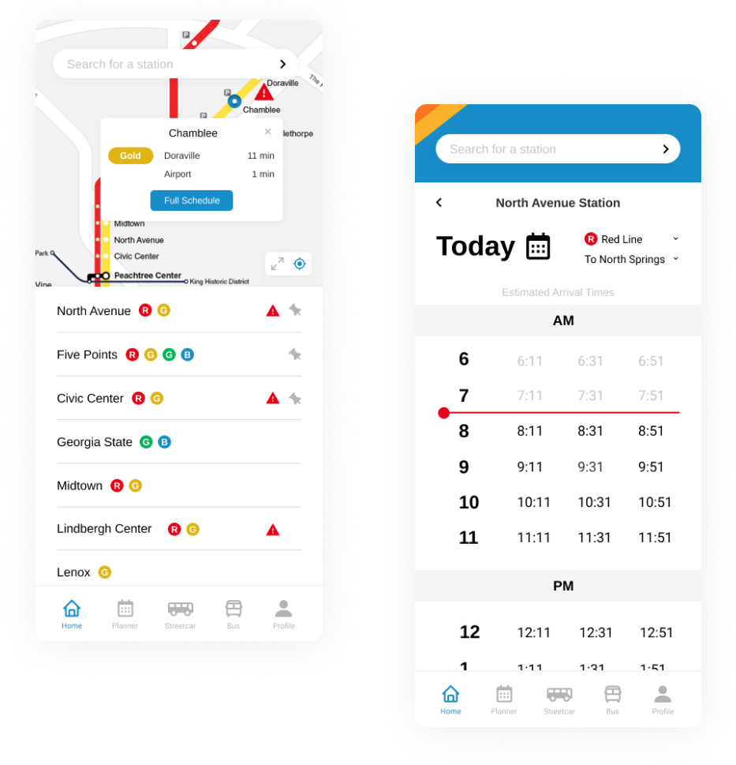
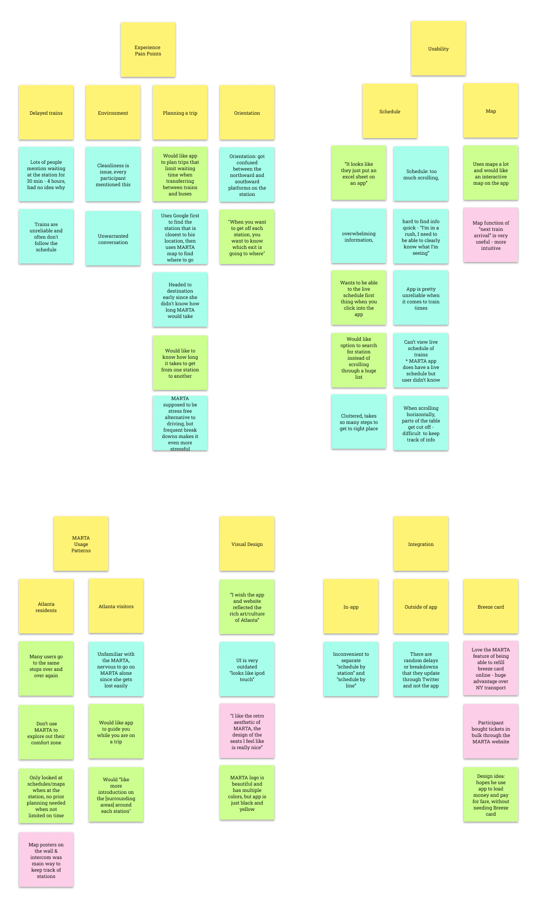
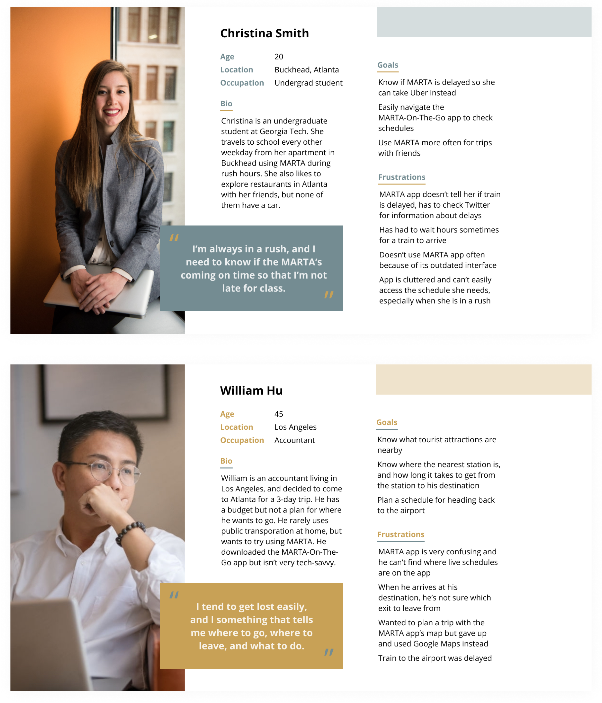
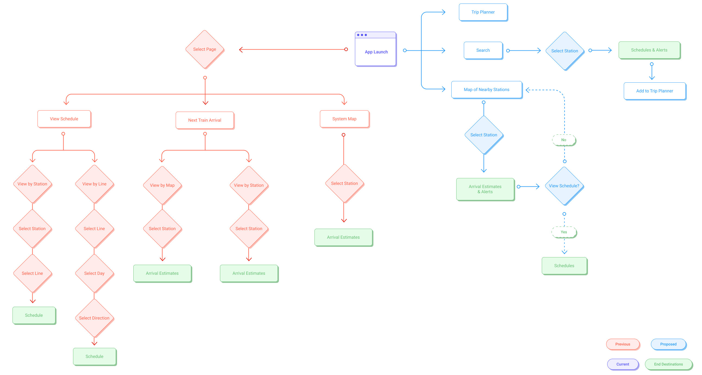
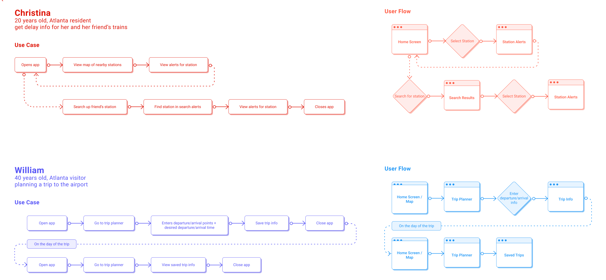
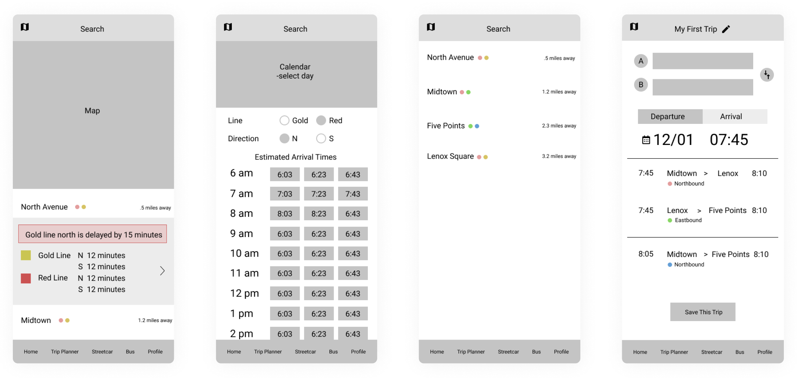
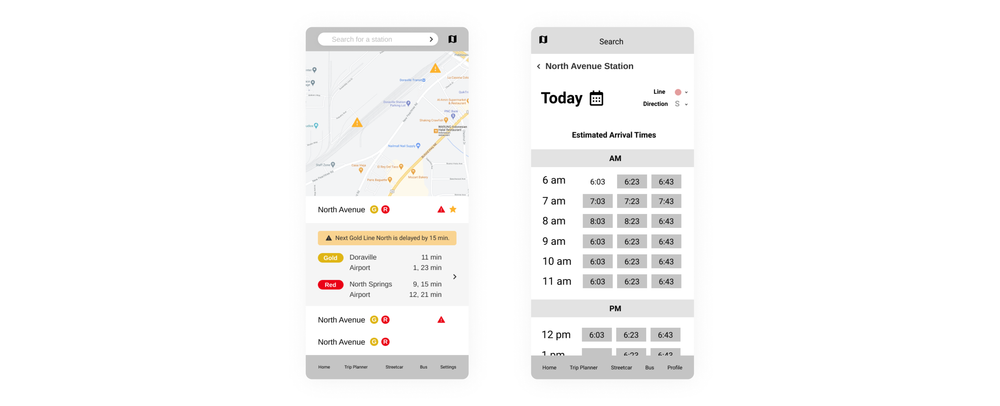
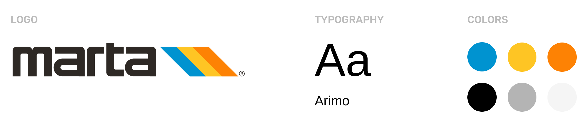

Type
Bootcamp project, IOS app
Role
User Research, UI Design
Partner
Karis Wang
Duration
Sep - Nov 2020 (2 months)
MARTA, Atlanta's public transportation system, strives to make transportation more accessible and seamless for people living in Atlanta. As a part of a design bootcamp, my partner and I looked for ways to uphold this goal by improving its transit app, MARTA On The Go.
For transit systems as large as MARTA, a big factor of accessibility is having a reliable platform to help users with scheduling trips. While the current MARTA On the Go app gives real-time arrivals and schedules, it is outdated and difficult to use.
To get different perspectives on MARTA and MARTA's app, we conducted 30 minute interviews with eight people: four who use MARTA regularly and four Atlanta visitors who had only used MARTA once or twice. Our interviewees discussed the lack of delay alerts, usability issues with the app, and struggles with planning trips. These are a few quotes that summarize their experiences.
We used an affinity diagram to organize our findings into clusters and gather up our key findings.
From our interviews, we found that regular MARTA passengers had much different needs from first-time MARTA passengers. Regular passengers needed quick access to real-time arrival information and delay alerts. First-time passengers needed guidance on how to plan and go through their trips. We created two user personas and a journey map to reflect the sentiments of our user groups.
We decided the best way to improve regular MARTA passengers' experience was to put a map, real-time alerts, and delay alerts all on the home screen of the app for easy navigability. For Atlanta visitors, we thought of adding a trip planner that would walk them through getting from one station to another.
With this in mind, we diagrammed a compare-and-contrast user flow, comparing the app's current user flow (red) to our new one (blue). Our new flow was able to simplify the app so that users could access most screens in a few clicks. We also created a persona user flow for how our personas would navigate through the app.
 Using our user flows, we created wireframes for four screens on the app: the home screen, schedules, search results, and trip planner. We took inspiration from Google Maps, BART's (Bay Area Rapid Transit) trip planner, and other transit app designs to structure our screens in a logical way for users.
We received some suggestions to increase the emphasis on alerts in the home screen and improve the way users select their station/direction on the schedule timetable.
A big issue that a lot of interviewees had with the current app was the poor visual design. To make the app as clean as possible, we agreed on a simple, light-themed design, incorporating colors and shapes from MARTA's logo to help emphasize the branding.
Users see a map and list of nearby stations. Information on real-time arrivals and delay alerts can be accessed by clicking on a station in the map or list.
Rather than scrolling through lists of timetables on the current app, users select their desired date, rail line, and direction to get a table of estimated arrival times.

Users can search for a station from the home screen, and click on each station for real-time arrival information. They can then choose to view the station on the map.
Users can plan a trip by entering their departure locations, arrival locations, and departure/arrival times into the trip planner. They will receive a list of route options and can save the itinerary to a list of trips.
We presented our mockups at an expo for our design bootcamp, where people were able to test a prototype of our app and give us feedback. Based on the feedback, the next steps for our project are:
Working on this project has been a really great chance for me to practice redesigning an existing app. Many of my previous projects involved me designing something from scratch, so having the structure of the current MARTA app was both a benefit and a challenge. We had to spend some time looking at the current app, to find what features should be emphasized, what features needed to be hidden, and what features should be added or removed.
I also had a really great experience working with my partner, Karis. She had many good ideas and a nice working style, being meticulous and consistent with her designs but never getting caught up in details. Working with her has helped me improve my own working style. Overall, it was really fun to work together and learn a lot of new things through this project!
Let's get in touch!